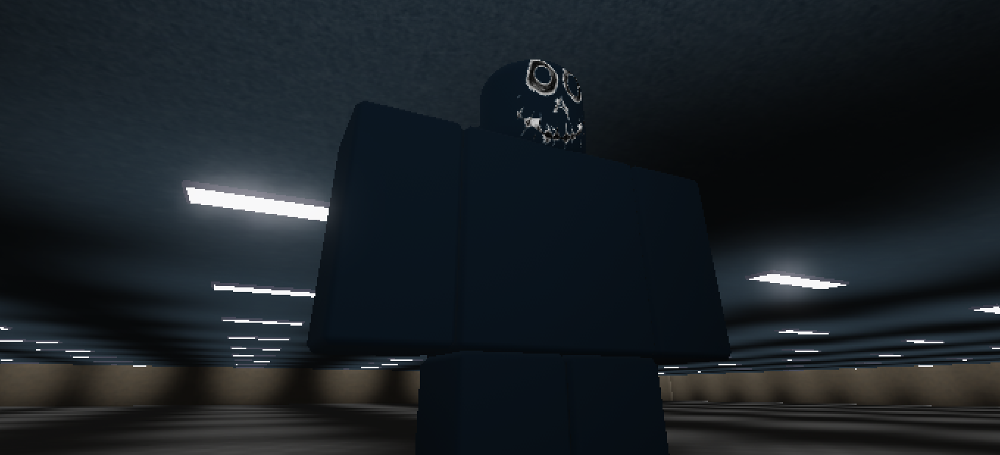
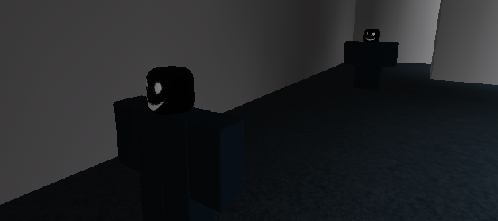
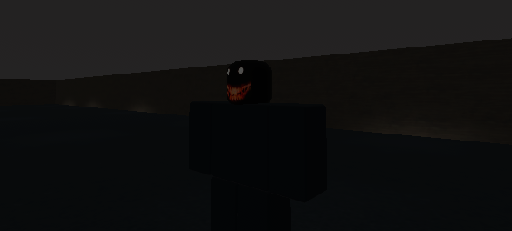
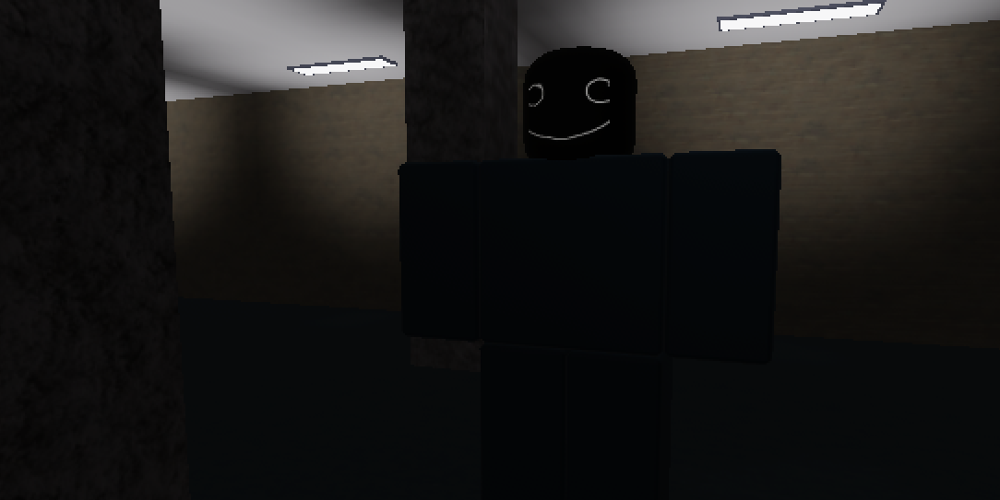
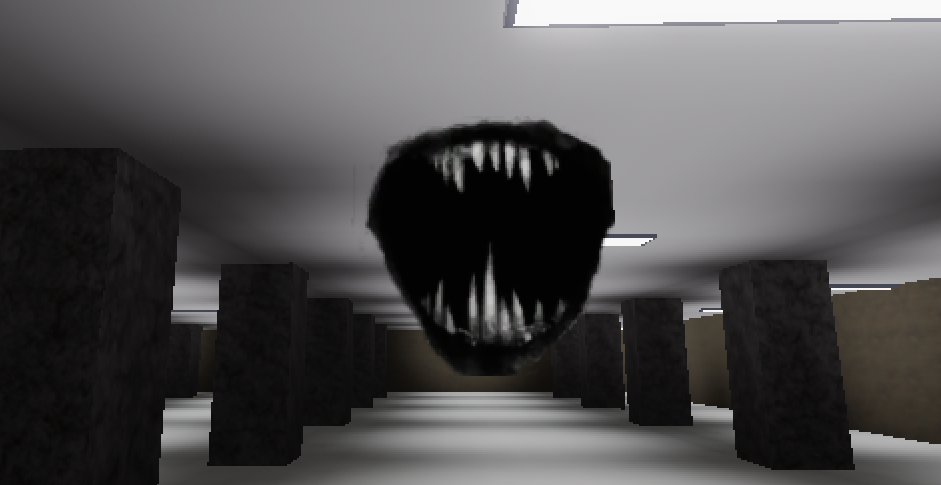
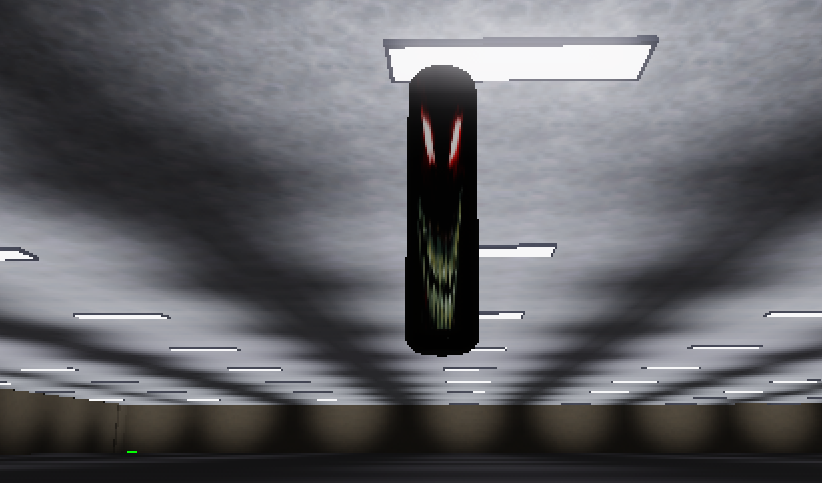

Phantoms
Phantom 0
This phantom is one of the few titans that will chase you slowly. It only spawns in level 0 (The Exit?). Do not stop running!
Phantom 1
Theses human sized phantoms will walk towards you. One touch, and you're gone! And by the way, you will not find these wiered biengs anywhere other than level 1 (The Maze). The origin of them were to be minion sized phantoms until one of our beta tester said that the phantoms were too small. Hilarious!
Phantom 2
Finding a smiling face in the dark? Thats creepy! It will all end once you get into The Maze. Until then, you're stuck with the only dark boy in level 2 (Loneliness).
Phantom 3
Dang! Thats one goofy titan. This titan's origin says that he was supposed to be with his friends. But for some reason he's the only one left. The lonely one in level 3 (Dang! Thats A Goofy One!)
Phantom 4
Travelling through the dotty walls and... someone left their mouth in the air. The first phantom to not have a body is found in level 4 (Someone Left Their Mouth!)
Phantom 5
Oh my! This phantom got executed. His head is here, but where's his body? Headless one in level 5 (The Invisible Maze)
Phantom 6
Wait a little longer...